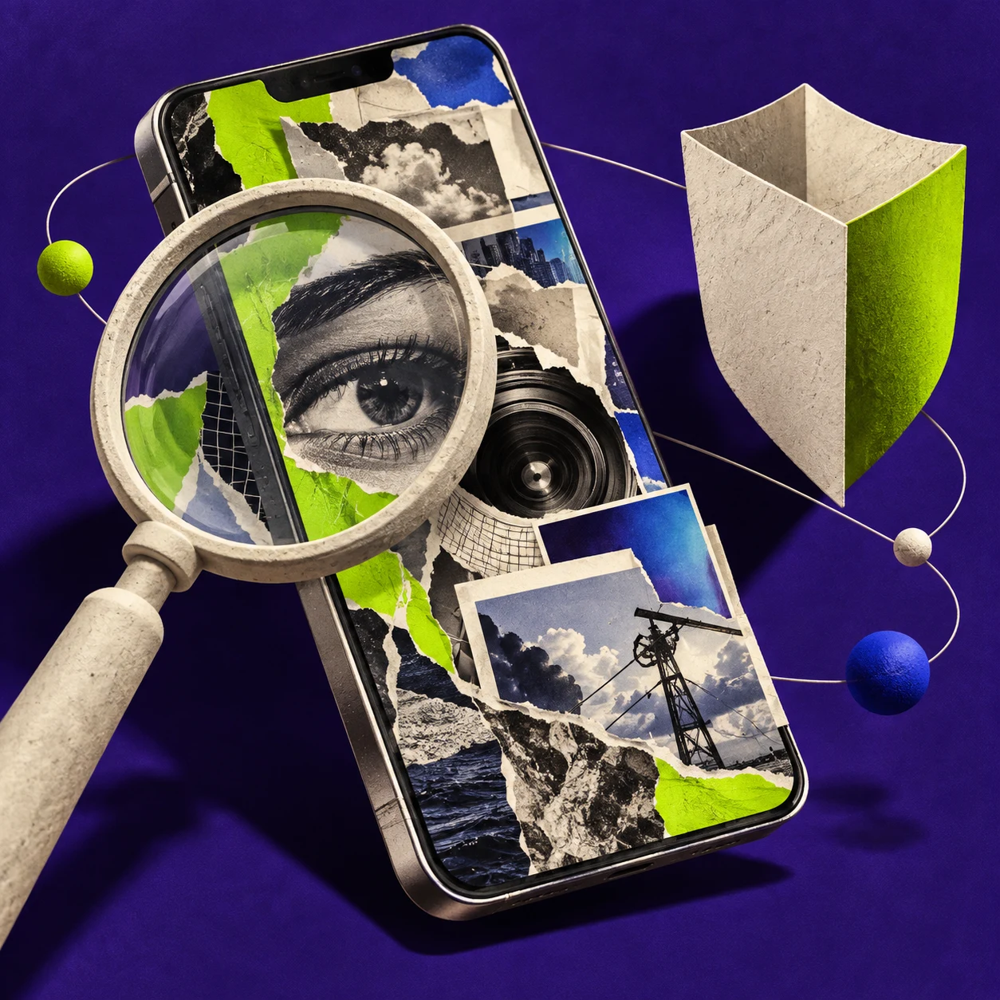
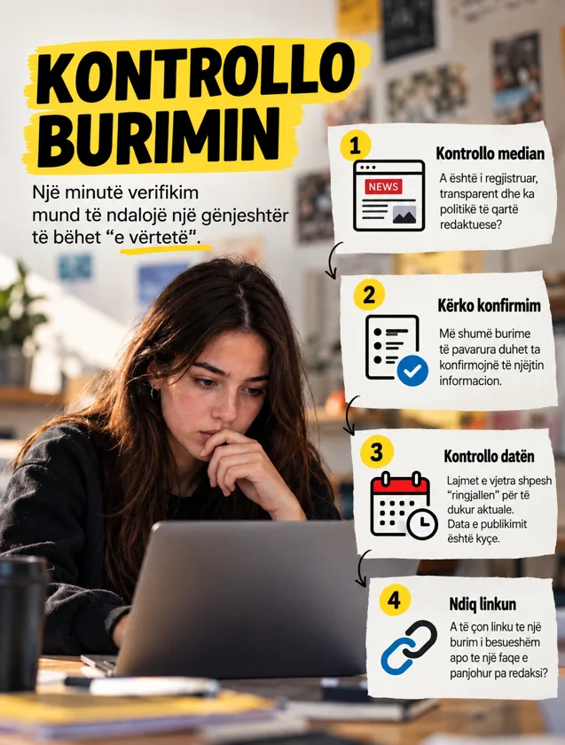
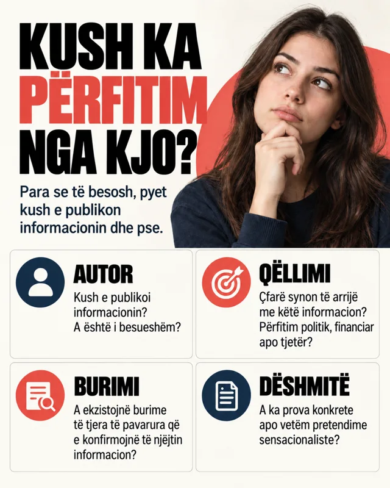
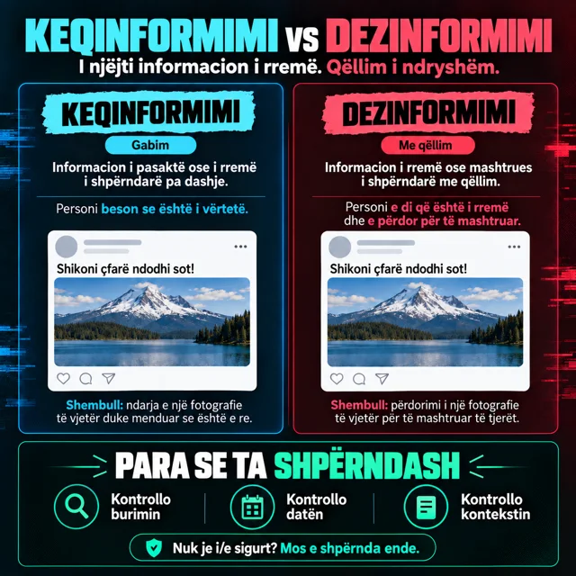

Para se të besosh.Para se të shpërndash.
Mëso të verifikosh informacionin, të kuptosh AI dhe të mbrosh të dhënat e tua. Të gjitha në një vend, në gjuhën tënde.

Zgjidh një temë.
Lexo me radhë ose hap kapitullin që të duhet.
Verifikimi i informacionit
Popullariteti ≠ verifikim.
Verifikimi i informacionit do të thotë të përcaktohen burimi, provat dhe konteksti i një pretendimi para se të pranohet ose shpërndahet si fakt.
BurimiAutori dhe media që e publikojnë.
ProvatDokumente, të dhëna dhe burime të verifikueshme.
KontekstiData, vendi dhe përmbajtja e plotë.
Misinformim
Informacion i pasaktë që shpërndahet pa qëllim për të mashtruar.
Dezinformim
Informacion i rremë ose manipulues që krijohet ose shpërndahet qëllimisht për të mashtruar.
Nuk mund ta përcaktosh gjithmonë qëllimin nga një postim i vetëm. Kontrollo fillimisht nëse pretendimi është i saktë; mos supozo pse dikush e ka shpërndarë.
Pesë hapa para se të besosh ose shpërndash
- 1
Ndalu
Përmbajtja që të frikëson, të zemëron ose të kërkon ta shpërndash menjëherë duhet kontrolluar. Numri i madh i pëlqimeve nuk dëshmon se është e saktë.
- 2
Kontrollo burimin
Hap postimin origjinal. Kërko autorin, emrin e medias dhe provat për pretendimin. Kontrollo adresën e faqes: faqet e rreme mund të imitojnë media të njohura.
- 3
Kontrollo datën dhe kontekstin
Lexo më shumë se titullin. Një fotografi e vjetër, një video e shkurtuar ose një citim jashtë kontekstit mund të paraqitet si ngjarje e re. Kontrollo kur dhe ku është krijuar përmbajtja.
- 4
Kërko konfirmim të pavarur
Kontrollo nëse burime të tjera të besueshme e konfirmojnë pretendimin. Disa profile që kopjojnë të njëjtin postim nuk janë konfirmim i pavarur. Kur është e mundur, gjej dokumentin ose deklaratën origjinale.
- 5
Shpërndaj me përgjegjësi
Nëse nuk mund ta verifikosh, mos e shpërndaj si fakt. Nëse ke shpërndarë informacion të pasaktë, korrigjoje dhe shpjego çfarë ishte gabim.
Nuk je i sigurt? Mos e shpërndaj ende.
Algoritmet dhe përzgjedhja e përmbajtjes
Algoritmi zgjedh. Ti verifikon.
Algoritmet janë sisteme që përzgjedhin dhe renditin përmbajtjet. Në rrjetet sociale ndikojnë se cilat postime, video dhe reklama shfaqen në feed.
Reagimet e tua→Përzgjedhja e algoritmit→Përmbajtja e radhës
Ky është një paraqitje e thjeshtuar. Rekomandimet mund të varen edhe nga sinjale të tjera.
Rekomandimet mund të përdorin shikimet, kërkimet, pëlqimet dhe reagimet e tua për të zgjedhur çfarë do të shohësh më pas. Kjo përzgjedhje nuk konfirmon saktësinë e përmbajtjes.
Kërko një këndvështrim tjetër
Për një temë të rëndësishme, dil nga feed-i dhe hap disa burime të besueshme.
Zgjidh kë ndjek
Rishiko profilet që ndjek dhe përdor “Nuk më intereson” kur mundësia është e disponueshme.
Vëre zakonin
Vendos kur do ta mbyllësh aplikacionin, në vend që videoja tjetër të vendosë për ty.
AI dhe përmbajtjet deepfake
Realiste ≠ e vërtetë.
AI mund të krijojë dhe ndryshojë tekst, imazhe, video dhe zë. Pamja realiste ose zëri i njohur nuk mjaftojnë si provë autenticiteti.
- Kërko regjistrimin, postimin ose deklaratën origjinale.
- Kontrollo nëse burime të besueshme e konfirmojnë ngjarjen.
- Një pamje ose tingull i pazakontë mund të jetë arsye për kontroll, por nuk është në vetvete provë manipulimi.
Të dhënat personale dhe siguria
Të dhënat e tua. Mbrojtja jote.
Phishing është mashtrim përmes mesazheve ose faqeve që paraqiten si të besueshme për të marrë fjalëkalime, kode hyrjeje ose të dhëna të tjera. Shenja të zakonshme janë kërkesa për reagim urgjent, një çmim i papritur dhe një lidhje me adresë të panjohur ose të imituar. Edhe një profil i njohur mund të jetë marrë nga dikush tjetër.
- Mos fut fjalëkalim ose kod hyrjeje përmes një lidhjeje nga një mesazh i dyshimtë.
- Kontrollo me personin përmes një kontakti tjetër të njohur.
- Nëse duhet të kontrollosh diçka në platformë, hape drejtpërdrejt aplikacionin ose faqen zyrtare.
Tri gjëra që mund t’i rregullosh sot
- Fjalëkalim i gjatë dhe i ndryshëm për çdo profil.
- Autentikim me dy faktorë (2FA), kur është i disponueshëm.
- Leje të kontrolluara për vendndodhjen, kontaktet, kamerën dhe mikrofonin.
Bullizmi kibernetik dhe mbështetja
Ruaj provat. Kërko mbështetje.
Bullizmi kibernetik është ngacmim i përsëritur përmes platformave digjitale për të frikësuar, poshtëruar ose lënduar dikë. Mund të përfshijë fyerje, kërcënime, përhapje gënjeshtrash, publikim fotografish poshtëruese ose përdorim të një identiteti të rremë. Edhe një incident i vetëm serioz meriton raportim dhe mbështetje.
Mos u përgjigj me fyerje
Mos e vazhdo zënkën dhe mos e shpërnda përmbajtjen fyese.
Ruaj provat
Ruaj mesazhet, lidhjet dhe pamjet e ekranit që të mund të shpjegosh çfarë ka ndodhur.
Blloko dhe raporto
Përdor mundësitë e platformës për të bllokuar dhe raportuar.
Tregoji një të rrituri të besuar
Fol me një prind, mësues ose psikolog shkolle. Nëse ndihesh në rrezik, kërko ndihmë menjëherë.
Krijimi i përmbajtjes së përgjegjshme
Mesazh i qartë. Burim i verifikuar.
Përmbajtja digjitale e përgjegjshme ka një mesazh të qartë, pretendime të verifikuara dhe respekt për njerëzit që paraqet. Një poster, postim ose video e shkurtër duhet ta ndihmojë lexuesin të kuptojë diçka ose të ndërmarrë një hap konkret.
Zgjidh një mesazh
Kontroll para shpërndarjes, njohje e manipulimit të qëllimshëm ose mbështetje kundër bullizmit kibernetik.
Krijo një poster, postim ose video të shkurtër
Vendos një titull të qartë, një pamje që shpjegon mesazhin, një fakt të verifikuar me burim dhe një këshillë konkrete. Shëno përmbajtjen e krijuar me AI.
Shpjego dhe shpërndaj
Tregoje para nxënësve: pse ky mesazh dhe si e kontrollove? Për këndin ose profilin e shkollës, koordinohu me një mësues.
Posterë për shkollën
Dija meriton të ndahet.
Pesë posterë me mesazhe të qarta për verifikimin e informacionit dhe sjelljen e përgjegjshme. Hapi ose shkarkoji për këndin e shkollës.



Kontrollo burimin
Shkarko PNG

Kush përfiton nga kjo?
Shkarko PNG
